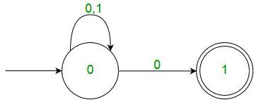

Finite Automata(FA) is the simplest machine to recognize patterns.
A Finite Automata consists of the following :
Q : Finite set of states. ∑ : set of Input Symbols. q : Initial state. F : set of Final States. δ : Transition Function.
Formal specification of machine is
{ Q, ∑, q, F, δ }.
FA is characterized into two types:
1) Deterministic Finite Automata (DFA)
DFA consists of 5 tuples {Q, ∑, q, F, δ}.
Q : set of all states.
∑ : set of input symbols. ( Symbols which machine takes as input )
q : Initial state. ( Starting state of a machine )
F : set of final state.
δ : Transition Function, defined as δ : Q X ∑ --> Q.
In a DFA, for a particular input character, machine goes to one state only. A transition function is defined on every state for every input symbol. Also in DFA null (or ε) move is not allowe, i.e., DFA can not change state without any input character.
For example, below DFA with ∑ = {0, 1} accepts all strings ending with 0.

One important thing to note is, there can be many possible DFAs for a pattern. A DFA with minimum number of states is generally preferred.
2) Nondeterministic Finite Automata(NFA)
NFA is similar to DFA except following additional features:
1. Null (or ε) move is allowed i.e., it can move forward without reading symbols.
2. Ability to transit to any number of states for a particular input.
However, these above features don’t add any power to NFA. If we compare both in terms of power, both are equivalent.
Due to above additional features, NFA has a different transition function, rest is same as DFA.
δ: Transition Function δ: Q X (∑ U ϵ ) --> 2 ^ Q.
As you can see in transition function for any input including null (or &epsilon), NFA can go to any state number of states.
For example, below is a NFA for above problem

One important thing to note is, in NFA, if any path for an input string leads to a final state, then the input string accepted. For example, in above NFA, there are multiple paths for input string “00”. Since, one of the paths leads to a final state, “00” is accepted by above NFA.
{kind=link}
Some Important Points:
1. Every DFA is NFA but not vice versa.
2. Both NFA and DFA have same power and each NFA can be translated into a DFA.
3. There can be multiple final states in both DFA and NFA.
3. NFA is more of a theoretical concept.
4. DFA is used in Lexical Analysis in Compiler.
See Quiz on Regular Expression and Finite Automata.